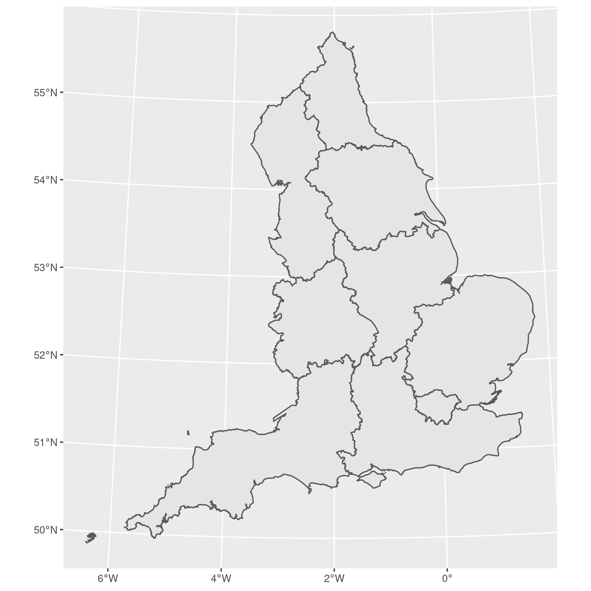
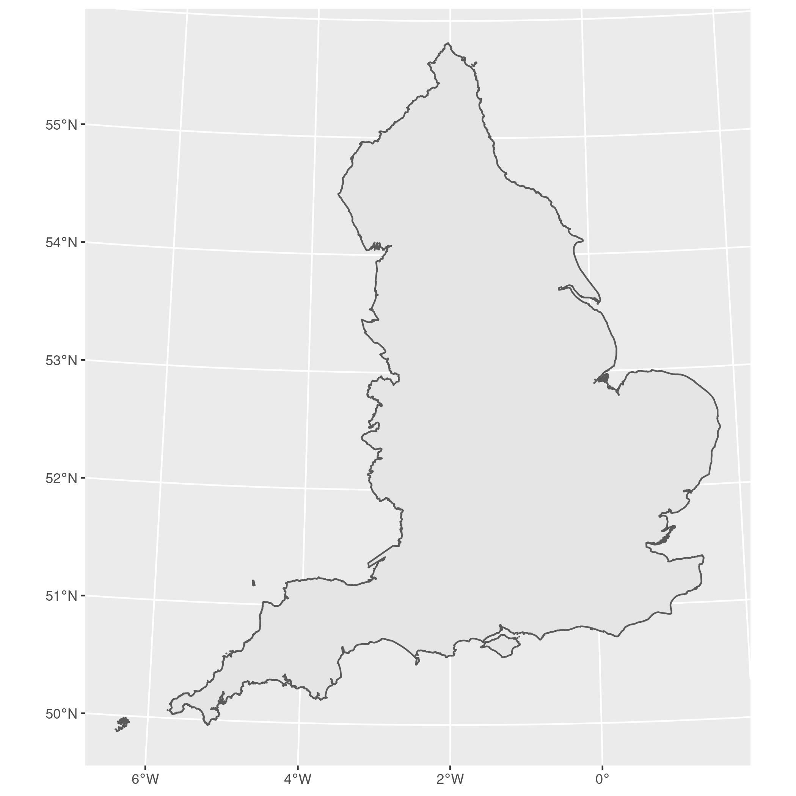

Dissolve polygons in R¶
date: 2015-09-03
Dissolving polygons is an elementary GIS task that I need to perform regularly. A dissolve removes internal boundaries, leaving only the outline.
Packages¶
Install and load the packages we’ll need. I use sf because it’s more
intuitive than rgdal, and I’m loading tidyverse because it plays
well with sf.
# install.packages(c("dplyr", "sf", "ggplot2"))
library("dplyr")
library("ggplot2")
library("sf")
Boundary data¶
Download the shapefile we’re going to dissolve.
tmp_dir = tempdir()
tmp = tempfile(tmpdir = tmp_dir, fileext = ".zip")
download.file(
"http://census.edina.ac.uk/ukborders/easy_download/prebuilt/shape/England_gor_2011.zip",
destfile = tmp
)
unzip(tmp, exdir = tmp_dir)
And now load the shapefile we just extracted and plot it to ensure it’s worked:
regions = read_sf(tmp_dir, "england_gor_2011")
plot = ggplot(regions) + geom_sf()
ggsave("../_static/img/england_regions.png", plot)
## Saving 7 x 7 in image

England regions¶
Now lets have a look at the data (without the geometry):
regions %>%
st_set_geometry(NULL) %>%
glimpse()
## Rows: 9
## Columns: 3
## $ code <chr> "E12000006", "E12000007", "E12000002", "E12000001", "E12000004",…
## $ name <chr> "East of England", "London", "North West", "North East", "East M…
## $ label <chr> "E12000006", "E12000007", "E12000002", "E12000001", "E12000004",…
Dissolves with sf() do not save the data frame (other than the
geometry column) by default without specifying how to aggregate the
data. Using area as an example:
regions$area <- st_area(regions)
regions
## Simple feature collection with 9 features and 4 fields
## geometry type: MULTIPOLYGON
## dimension: XY
## bbox: xmin: 82643.6 ymin: 5333.602 xmax: 655989 ymax: 657599.5
## projected CRS: OSGB 1936 / British National Grid
## # A tibble: 9 x 5
## code name label geometry area
## * <chr> <chr> <chr> <MULTIPOLYGON [m]> [m^2]
## 1 E12000… East of En… E12000… (((547491 193549, 547472.1 193465.5, 547… 1957502…
## 2 E12000… London E12000… (((526048.4 161889.6, 526037.4 161893.6,… 159472…
## 3 E12000… North West E12000… (((392703.4 434383.5, 392681.8 434368.7,… 1491524…
## 4 E12000… North East E12000… (((420570.7 637160.3, 420570.6 637160.4,… 867641…
## 5 E12000… East Midla… E12000… (((456472.5 274014.3, 456432.6 274084.3,… 1581475…
## 6 E12000… Yorkshire … E12000… (((537480.1 415251.6, 537473.2 415261.1,… 1556415…
## 7 E12000… South West E12000… (((90195.03 10349.04, 90194.1 10345.7, 9… 2439226…
## 8 E12000… West Midla… E12000… (((325576.3 238639.3, 325570.7 238655, 3… 1300380…
## 9 E12000… South East E12000… (((429042.2 84841.15, 429056.2 84832.6, … 1941297…
Now we have something some data that’s meaningful to group, we can just
use summarise() to group the data and perform the dissolve:
england <-
regions %>%
summarise(area = sum(area))
plot = ggplot(england) + geom_sf()
ggsave("../_static/img/england_dissolved.png", plot)
## Saving 7 x 7 in image

England dissolved regions¶
If you don’t have or want data to save the dissolve just create a column
to group_by() so that the features (rows) that are to be grouped
together are given the same data:
england <-
regions %>%
mutate(country = "england") %>%
group_by(country) %>%
summarise()
Original rgdal instructions¶
I’ve archived these in case but I strongly suggest using sf now for
most GIS tasks in R, including dissolves.
# Load a few packages. dplyr makes merges easier
require("rgdal")
require("rgeos")
require("dplyr")
# Use the original English regions shapefile downloaded above:
region = readOGR(tmp_dir, "England_gor_2011")
# Check the shapefile has loaded correctly:
plot(region)
# We're going to dissolve all regions in to one country (England!)
# For this we'll create a lookup table and merge with the spatial data
# Hopefully for your 'real' data you have a lookup table of all polygons and
# their larger geography already!
lu = data.frame()
lu = rbind(lu, region@data)
lu$CODE = as.character(lu$CODE)
lu$NAME = as.character(lu$NAME)
lu$country = NA
lu$country = "England"
# Merge
# We now need to merge the lookup table into our spatial object data frame.
# We should end up with one row per zone to dissolve, each with a reference for the relevant larger geography.
# I think the trick is to make sure the row names match exactly, and if you can match the polygon IDs as well with spChFIDs().
region@data$CODE = as.character(region@data$CODE)
region@data = full_join(region@data, lu, by = "CODE")
# Tidy merged data
region@data = select(region@data, -NAME.x)
colnames(region@data) = c("code", "name", "country")
# Ensure shapefile row.names and polygon IDs are sensible
row.names(region) = row.names(region@data)
region = spChFIDs(region, row.names(region))
# Dissolve
# I use gUnaryUnion() (and indeed I think unionSpatialPolygons() in the maptools package uses this by default).
region = gUnaryUnion(region, id = region@data$country)
# If you want to just plot this using base plot you can stop there.
# If you want to do anything with the data or plot using ggplot you need to recreate the data frame.
# If you want to recreate an object with a data frame make sure row names match
row.names(region) = as.character(1:length(region))
# Extract the data you want (the larger geography)
lu = unique(lu$country)
lu = as.data.frame(lu)
colnames(lu) = "country" # your data will probably have more than 1 row!
# And add the data back in
region = SpatialPolygonsDataFrame(region, lu)
# Check it's all worked
plot(region)
# And your data frame should look like this:
region@data
## country
## 1 England